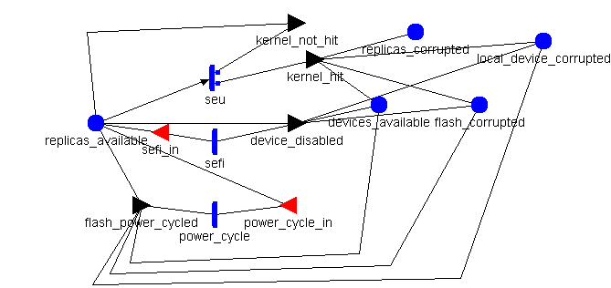
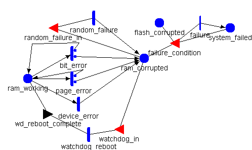

Model: pretty_redundant_controller_flash_system

| Place Names | Initial Markings |
|---|---|
| devices_available | |
| flash_corrupted | |
| local_device_corrupted | |
| replicas_available | |
| replicas_corrupted | |
| Timed Activity: | power_cycle |
|---|---|
| Distribution Parameters | Valuepower_cycle_rate |
| | |
| | |
| Timed Activity: | sefi |
|---|---|
| Distribution Parameters | Rate2.74e-3 |
| | |
| | |
| Timed Activity: | seu |
|---|---|
| Distribution Parameters | Rate6.44e-7 |
| | |
| | |
| | case 1return 1-(flash_size*replicas_available->Mark()/512);case 2 return flash_size*replicas_available->Mark()/512; |
| Input Gate: | power_cycle_in |
|---|---|
| | replicas_available->Mark() < num_replicas |
| | ; |
| Input Gate: | sefi_in |
|---|---|
| | replicas_available->Mark() > 0 |
| | ; |
| Output Gate: | device_disabled |
|---|---|
| |
replicas_available->Mark() = 0;
devices_available->Mark() -= 1;
local_device_corrupted->Mark() = 1;
if(devices_available->Mark() == 0) {
flash_corrupted->Mark() = 1;
}
|
| Output Gate: | flash_power_cycled |
|---|---|
| |
replicas_available->Mark() = num_replicas - replicas_corrupted->Mark();
if(local_device_corrupted->Mark() == 1) {
devices_available->Mark() += 1;
local_device_corrupted->Mark() = 0;
flash_corrupted->Mark() = 0;
}
|
| Output Gate: | kernel_hit |
|---|---|
| |
replicas_corrupted->Mark()++;
if(replicas_available->Mark() == 0) {
devices_available->Mark() -= 1;
local_device_corrupted->Mark() = 1;
if(devices_available->Mark() == 0) {
flash_corrupted->Mark() = 1;
}
}
|
| Output Gate: | kernel_not_hit |
|---|---|
| | replicas_available->Mark() += 1; |
Model: ram_system

| Place Names | Initial Markings |
|---|---|
| flash_corrupted | |
| ram_corrupted | |
| ram_working | |
| system_failed | |
| Timed Activity: | bit_error |
|---|---|
| Distribution Parameters | Rate6.012 |
| | |
| | |
| | case 1return 1-(ram_size/512);case 2 return ram_size/512; |
| Timed Activity: | device_error |
|---|---|
| Distribution Parameters | Rate3.8e-2 |
| | |
| | |
| Timed Activity: | page_error |
|---|---|
| Distribution Parameters | Rate//2.36e-5/8 0 |
| | |
| | |
| | case 1return 1-(ram_size/512);case 2 return ram_size/512; |
| Timed Activity: | random_failure |
|---|---|
| Distribution Parameters | Raterandom_failure_rate |
| | |
| | |
| Timed Activity: | watchdog_reboot |
|---|---|
| Distribution Parameters | Value3.47e-3 |
| | |
| | |
| Instantaneous Activities Without Cases: |
|---|
| failure |
| Input Gate: | failure_condition |
|---|---|
| | flash_corrupted->Mark() > 0 && ram_corrupted->Mark() > 0 && system_failed->Mark() == 0 |
| | ; |
| Input Gate: | random_failure_in |
|---|---|
| | ram_corrupted->Mark() == 0 |
| | ; |
| Input Gate: | watchdog_in |
|---|---|
| | ram_corrupted->Mark() > 0 |
| | ; |
| Output Gate: | wd_reboot_complete |
|---|---|
| | ram_working->Mark() = 1; ram_corrupted->Mark() = 0; |